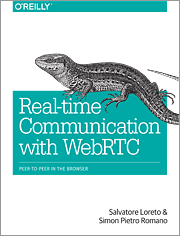

Before start
Start day 1
[1.1]
[1.2]
[1.3]
[1.4]
[1.5]
Start day 2
[2.1]
[2.2]
[2.3]
[2.4]
[2.5]
[2.6][2.7]Start day 3[3.1][3.2][3.3][3.4][3.5][3.6]
Communication between client and server, new kids (day 2, part 5)
Application caching
On of the differences compared to previous client server application architectures is that in the client server model the client program contained the business logic / the application program. This client program was often installed on the client. In the web model applications the program are served from the server and we cannot be sure that it will be cached by setting cache attributes in the way with did before. Even in the case of more client logic the logic is served from server on request. This has the following disadvantages: you need a connection to start your application. Application cache manifest caching is an attempt to solve this problem. Two warning needs to be made:
- as always is working with cache more complex and special attention is needed in relation to versioning of your cached information
- this technics works but has some subtile drawbacks you need to be aware of before using it in production. A more comprehensive solution is currently in it's early drafts: service workers.
An cache manifest file is a plain text file. In the file the folowing should and or can be described:
CACHE MANIFEST
CACHE
/tobecachedfile.html
NETWORK
/nevertobecachefiles.html
FALLBACK
/ifONLINEtakethisfile.html /ifNOTonlinetakethisfile.html
Excercises:
- Test the day2part5/cachemanifest example, by running the server and see the behaviour of calling the webpage after you shutdown the server. Check your console and network behaviour in your favourite browser
- Adjust the example to make you of the FALLBACK option (for example for the manifest hope picture)
TODO Remco start vanaf testroom/vospresentatie/requirebackbone http://localhost:8080/
Websockets
This is one of the game changing new apis being part of the HTML5 stack. It is new interaction pattern. Currently most web pages including the ones working with ajax work on a request/ response interaction pattern. The client ask for url and the server sends the request information (content of the url) as response. Websockets are standardized socket connection. This are full duplex connection which mean that both: the client and the server can take initiative to send information. In this model the server can send information directly to the browser who need or can use the information. There are a number of (dis-)advantages of websockets.
Disadvantages:
- It is a new communication pattern. New standards, convention and best-practices still need to be sorted out.
- The secure version need to be used, because otherwise the changes are big that firwall routers etc
- The session need to be maintained (ping like), and reconnection must be done automatically after disconnection
- The connection is session based. Therefore needs session based staefull information on server side. Needs efficient handling of this session support which need special attention for site with a high number of users
- Not supported for relatively old browser
Advantages:
- Pushing information from server to clients is possible
- Extremly small overhaed protocol, meaning far less bandwith needs
- Streaming information (both ways) is easy
- Works already in almost(!) every browser
- Monitoring client side can be done at totally different level: browser is actice instead of only user is active
WebRTC

This is yet another game changing api/technic that is part of the HTML5 stack. WebRTC stands for Web Real-Time Communication. This protocol makes direct(!) communication between clients possible. You (apart from a very small initialization you do not need any central server. This is very different from all previously interaction patterns in which a browser is connect to a server.
These API It is not yet supported as widespread as websockets, see also http://iswebrtcreadyyet.com/. But in IE it works with ChromeFrame.
The test is done with google A achilles of this protocol is the STUN server because it seems to be running under a predefined browser. In the web
TODO combining some of these tricks!! https://www.soundtrap.com/
Advantages of webRTC:
- Video quality (far better then Flash)
- Low latency. Proofed by practice that communication between India and the Netherlands was very good
- Standard. Only native and propriatery solutions available between devices